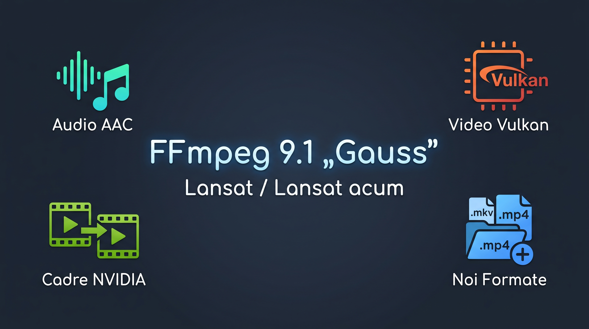

FFmpeg 9.1 „Gauss” a fost lansat: Encodare AAC îmbunătățită, codare video Vulkan, interpolare de cadre NVIDIA și suport extins pentru formate

Proiectul FFmpeg a lansat oficial versiunea 9.1 (nume de cod „Gauss”), cea mai nouă ediție a popularului framework multimedia open-source pentru înregistrarea, conversia și streaming-ul conținutului audio-video. Actualizarea aduce îmbunătățiri majore pentru encoderul nativ AAC, noi capabilități de accelerare hardware prin Vulkan, NVIDIA și AMD, precum și suport extins pentru formate de imagine și standardul LCEVC.
1. Îmbunătățiri audio: Encoder AAC nativ, xHE-AAC și DSD
Encoder AAC nativ revizuit: Encoderul AAC integrat în FFmpeg a primit optimizări extinse pentru o calitate superioară a sunetului.
Suport xHE-AAC: A fost introdusă codarea xHE-AAC prin intermediul bibliotecii externe
libfdk-xhe-aac.Formate audio de înaltă rezoluție: Sunt acum suportate decodarea și demuxarea DVD-Audio LPCM, alături de un nou encoder DSD (Direct Stream Digital).
2. Accelerare GPU și video: Vulkan, NVIDIA Optical Flow și AMD AMF
Codare video Vulkan (APV): După introducerea decodării accelerate hardware în FFmpeg 9.0, versiunea 9.1 adaugă un encoder bazat pe Vulkan pentru formatul Advanced Professional Video (APV).
NVIDIA (
fruc_vulkanși NVDEC): Utilizatorii de plăci grafice NVIDIA primesc filtrulfruc_vulkanpentru interpolarea cadrelor video (frame interpolation) accelerată prin flux optic (optical flow), precum și suport pentru accelerarea hardware NVDEC CUARRAY.AMD și inferență DNN: Pentru hardware-ul AMD, noul filtru
vqe_amfoferă acces la tehnologia AMF Video Quality Enhancer. În paralel, backend-ul ONNX Runtime DNN primește suport de inferență zero-copy prin D3D12 DirectML pe sistemele Windows compatibile.
3. Procesare de imagini, LCEVC și unelte pentru dezvoltatori
Suport extins pentru imagini: FFmpeg 9.1 poate coda și decoda texturi ASTC (prin
libastcenc, cu muxere/demuxere pentru.astcși containere KTX 1.0), adaugă suport pentru formatul JPEG Multi-Picture Format (MPF), un decodor pentru fișiere RAW Panasonic RW2 și un nou filtru gainmap (utilizat pentru imagini HDR).LCEVC (Low Complexity Enhancement Video Coding): Introduce gestionarea dual-track LCEVC direct în linia de comandă, muxarea pistelor LCEVC în containere MPEG-TS și un filtru dedicat de fuzionare a datelor (payload-merging bitstream filter).
API-uri și protocoale noi: Dezvoltatorii primesc un API de filtrare bitstream bazat pe grafuri (graph-based), filtre noi (
trim,side_data,jpegapp), suport pentru partiționarea datelor H.264, un protocol libcurl, un muxer pentru protocolul de afișare inline a imaginilor în iTerm2, selecție îmbunătățită a dispozitivelor AVFoundation prin identificatori unici/serii USB și noi decodoare/demuxere (Rhetorex ADPCM, ADPCM IMA Citrix, Infinity IMM6, MVR).